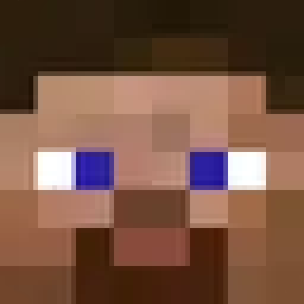

Информация
Сервер InBuild это minecraft-сервер на версию 1.12.2, с большой сборкой, состоящая более чем из пятидесяти модов среди них есть IndustrialCraft 2(индустрия и получение лучшей брони - квантовой), TechGuns(пистолеты, автоматы и другое), Vampirism и многие другие моды.
На сервере приятная атмосфера, интересные фишки, красивый спавн, классная администрация и интересная игра. Сервер доступен всем игрокам и работает 24 на 7.
В InBuild есть приваты - для спокойствия игроков, три грифа, одна анархия, донаты, красивый спавн, удобное управление.
Администрация
Vladius120 - владелец сервера
 GroAlexPixel - главный модератор
GroAlexPixel - главный модератор
 Drunes - модератор
HuskiBandi16 - модератор